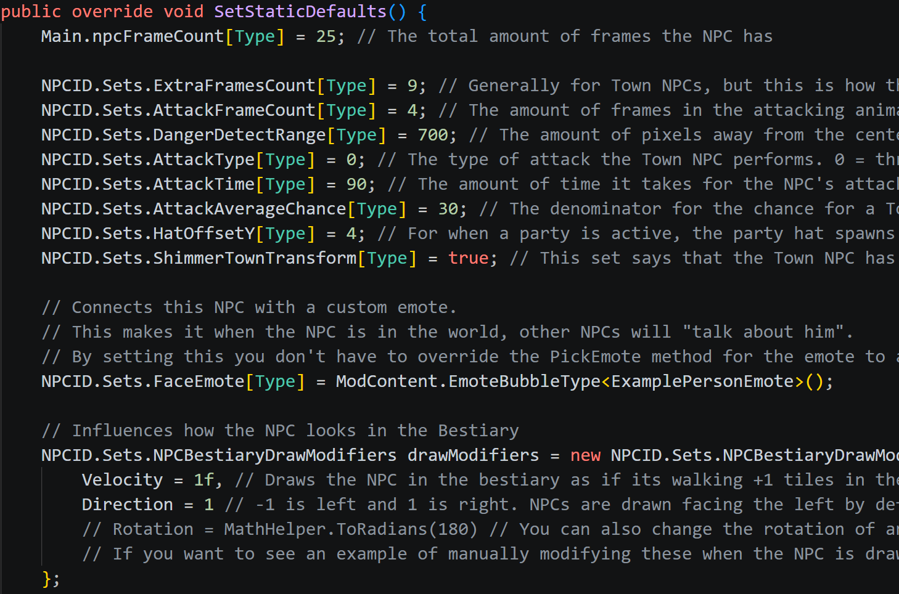
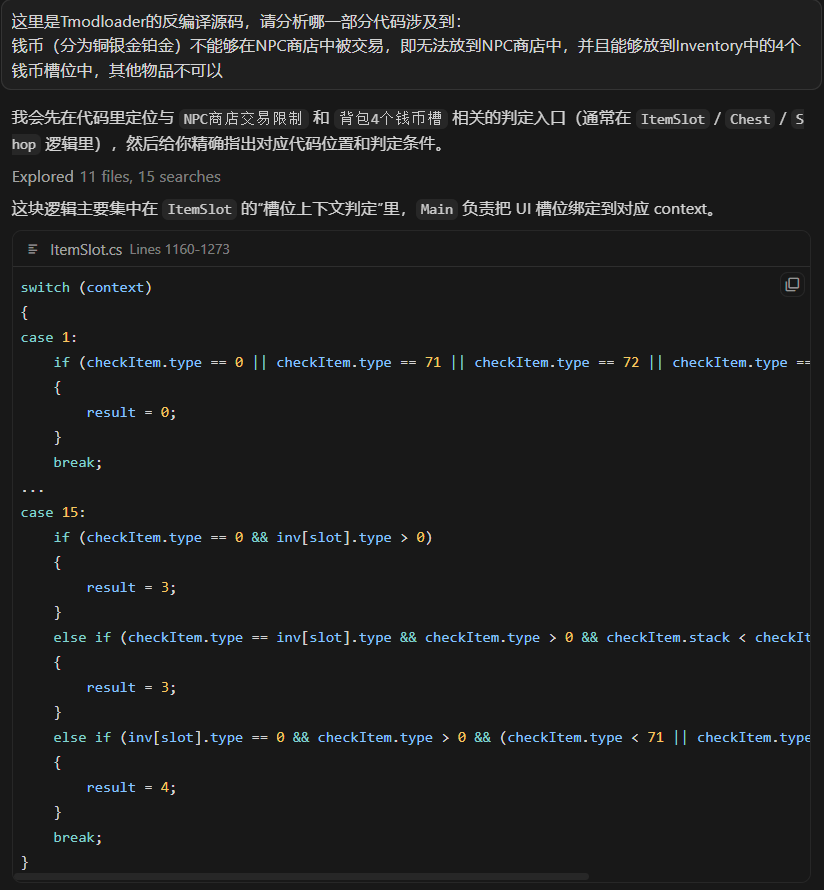
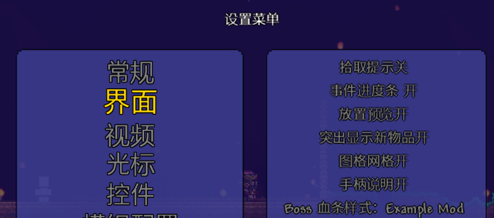

泰拉瑞亚mod开发笔记 1
在开发mod之前，请务必保证你有以下辅助性资源，否则开发的过程将异常困难：
- 官方的Wiki教程
- 按照官方教程得到了一份源代码
- 官方给出的mod样例ExampleMod
方法论
首先肯定是要按照官方文档过一遍，Wiki介绍了很多基本的修改方式，但是没有详尽列举所有可拓展部分。应该把Wiki教程作为方法论，它告诉哦我们应该如何去修改，大致在那个范围修改，但是具体执行修改还是需要去看源码，去看接口和Hook是如何定义的。
接着就是查看官方的ExampleMod，大部分能拓展的模块它都给出了一个实际的样例。具体的mod内容继承自ModXXX对象(ModItem、ModNPC等)开发的，ExampleMod则给出了一个继承的实例来补充了文档中没有提到的细节。

借助AI工具的辅助，我们可以比较轻松的找出原版代码实现某个机制的具体代码，这对于实现我们设计的机制而言非常有用。

讲完了方法论，我们来针对具体的模块来给出经验之谈。
本地化
这将是花费很多时间的板块，即使你的mod只支持中文，因为必须将文本和代码分离以解耦，否则既不便于多处调用同一段文本，也让代码变得很难看。
**硬广：**如果想要有方便的图形化界面同步编辑多个语言文件，可以使用LocalizationEditor
对于本地化文件的结构划分，应该遵循一个原则：能复用的文本尽量复用，不要让相同的文本在多处重复出现，使用换元来解决。比如说下面这样一个简单的饰品：
A_Gear: {
Tooltip:
'''
缓慢再生生命
强化技能 ‘6767’
[c/746f6f:啊吧啊吧]
[c/746f6f:这是背景故事]
'''
DisplayName: 洁白的头饰
}
其中可以拆分出来的单元很多，比如说“缓慢再生生命”，“强化技能”，6767,以及[]包围的两行都可以也最好拆分成为独立键，如果“洁白的头饰”这一文本会在其他地方被引用到，那么也要将其设置为单独的Key，比如：
EffectRegen: 缓慢再生生命
SkillEnhance: 强化技能
A: {
SkillName: 6767
GearDesc:
'''
[c/746f6f:啊吧啊吧]
[c/746f6f:这是背景故事]
'''
GearName: 洁白的头饰
}
# 假设你的mod名字叫做XMod
A_Gear: {
Tooltip:
'''
{$Mods.XMod.EffectRegen}
{$Mods.XMod.SkillEnhance} ‘{$Mods.XMod.A.SkillName}’
{$Mods.XMod.A.GearDesc}
'''
DisplayName: {$Mods.XMod.A.GearName}
}
如果我们发现，不同的Gear饰品之间的Tooltip格式都是一样的，区别就是A替换成为了B，C，D，那么更极端一点的做法就是：
EffectRegen: 缓慢再生生命
SkillEnhance: 强化技能
A: {
SkillName: 6767
GearEffect: "{$Mods.XMod.EffectRegen}"
GearDesc:
'''
[c/746f6f:啊吧啊吧]
[c/746f6f:这是背景故事]
'''
GearName: 洁白的头饰
}
# 假设你的mod名字叫做XMod
Tooltip:
'''
{0}{$Mods.XMod.SkillEnhance} ‘{1}’
{2}
'''
然后在代码里面格式化LocalizaedText，从而完全不需要每多出一个Item就手动拼接一次，最大程度减少重复。
货币系统
护卫奖章是原版的特殊货币，是独立于原版四币的货币系统，tmodloader自带提供了一个方便的实现CustomCurrencySingleCoin，用于支持单币种货币系统。但是显然，如果想要拓展到多币种系统，或者想要修改货币的显示方式，还是需要自己动手，这就需要继承CustomCurrencySystem。为了到达原版的效果，我们至少要做以下内容：
- 货币不能作为可交易物品
- 货币不能显示交易价格
- 购买时扣钱应该尽量保持货币物体的槽位不变
第一点，通过查看源代码得知，在出售物品之前，ModPlayer.CanSellItem接口将检测这个物体是否能被出售，只需在这一层拦截，实现如下：
public override bool CanSellItem(NPC vendor, Item[] shopInventory, Item item)
{
if (item.ModItem is Currency) return false;
return base.CanSellItem(vendor, shopInventory, item);
}
第二点，需要修改货币Item对应的Tooltip显示，在显示之前ModItem.ModifyTooltips接口将给出自定义Tooltip的操作空间，这也是最好的拦截接口，实现如下：
public override void ModifyTooltips(List<TooltipLine> tooltips)
{
var ptl = tooltips.FirstOrDefault(tl => tl.Name == "Price");
if (ptl != null) ptl.Hide();
}
第三点，需要修改货币交易时的操作接口，CustomCurrencySystem.TryPurchase接口负责具体的货币交易，这里的实现比较复杂，但是逻辑很简单，就是先尽可能地从已有的而货币中扣款，不涉及到进位。如果这一轮之后还有余款，则破开一个比余款多的货币，然后执行找零。
BossBar生命条
关于BossBar有很多个概念，分别是GlobalBossBar、ModBossBar、ModBossBarStyle。
我们来逐个区分一下：
-
GlobalBossBar是对原版Boss生命条的机制修改，比如说，你可以通过检测是否为指定的Boss，从而为生命条施加特效。
-
ModBossBar则是让你自定义一个新的Boss生命条的机制，比如说你可以自定义Boss头像，自定义血量显示值，ModBossBar能做的事情和GlobalBossBar类似，只是ModBossBar可以通过
NPC.BossBar = ModContent.GetInstance<MinionBossBossBar>();来覆盖自定义NPC，而原版NPC的BossBar属性无法修改。 -
ModBossBarStyle则给你完全重新绘制所有Boss生命条的机会，处于最高优先级。如果你创建了新的ModBossBarStyle并且应用了该风格，那么Boss生命条将完全由你接管，包含数值计算。有些Mod比如说灾厄就绘制了自己专属的ModBossBarStyle。

自定义字体
这里是最令人绝望和无奈的摸索环节，我基本上没有找到什么教程，AI回答的也是依托石。那么我给你最直接、最真相、最不绕弯、最硬核、最干脆、最只给结果、最只聊真相、最核心、最关键的答案——”TTF或者活字印刷“。
首先tmodloader里面使用的是Relogic.Graphics.DynamicSpriteFont，这意味着什么，MonoGame的xnb打包方式不会生效。唯一能找到的第三方转化器是DynamicFontGenerator，如果你手上有ttf字体，那么非常好，能够直接打包成xnb文件，从而加载。如果你的手上是一堆美术给出来的贴图的话，那么使用活字印刷是最简单的方式，反正DynamicSpriteFont也是活字印刷。在不考虑字体不支持的字符的情况下，活字印刷就只需要以下代码：
private Texture2D texture;
private readonly float scale;
private readonly int column;
private readonly int height;
private readonly int spacing;
private readonly List<int> startX;
private readonly List<int> width;
public void Draw(SpriteBatch sb, string text, Vector2 pos, Color col, float rot, Vector2 origin, float scale, SpriteEffects effects, float depth)
{
if (string.IsNullOrEmpty(text)) return;
var realScale = this.scale * scale;
float totalH = height;
float totalW = (text.Length - 1) * this.spacing;
List<int> idx = new();
for (int i = 0; i < text.Length; i++)
{
var delta = text[i] - '0';
delta = Math.Clamp(delta, 0, 9);
totalW += this.width[delta];
idx.Add(delta);
}
Vector2 Origin = new Vector2(totalW * 0.5f, totalH * 0.5f);
float unscaledCursorX = 0f;
for (int i = 0; i < text.Length; i++)
{
int index = idx[i];
int sx = this.startX[index];
int sy = (index / this.column) * this.height;
int width = this.width[index];
var src = new Rectangle(sx, sy, width, this.height);
sb.Draw(
texture,
position: pos,
sourceRectangle: src,
color: col,
rotation: rot,
origin: Origin - new Vector2(unscaledCursorX, 0f),
scale: realScale,
effects: effects,
layerDepth: depth
);
unscaledCursorX += width + this.spacing;
}
}